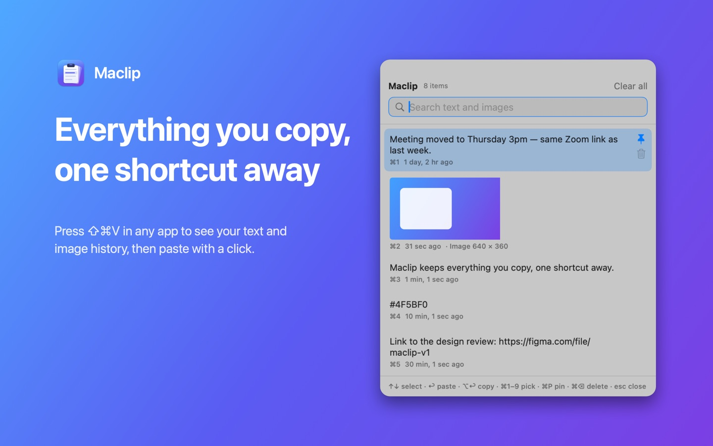
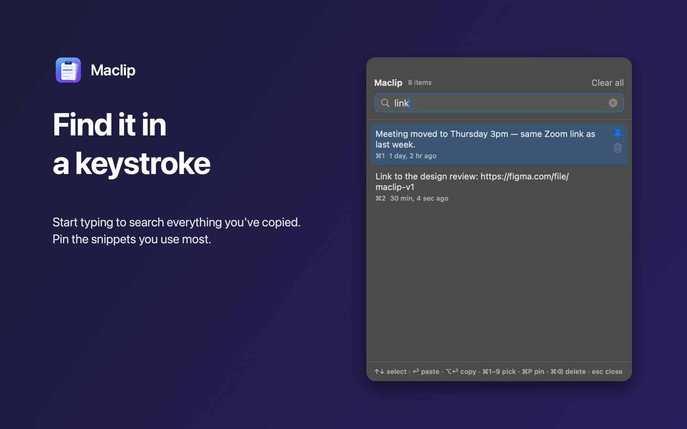
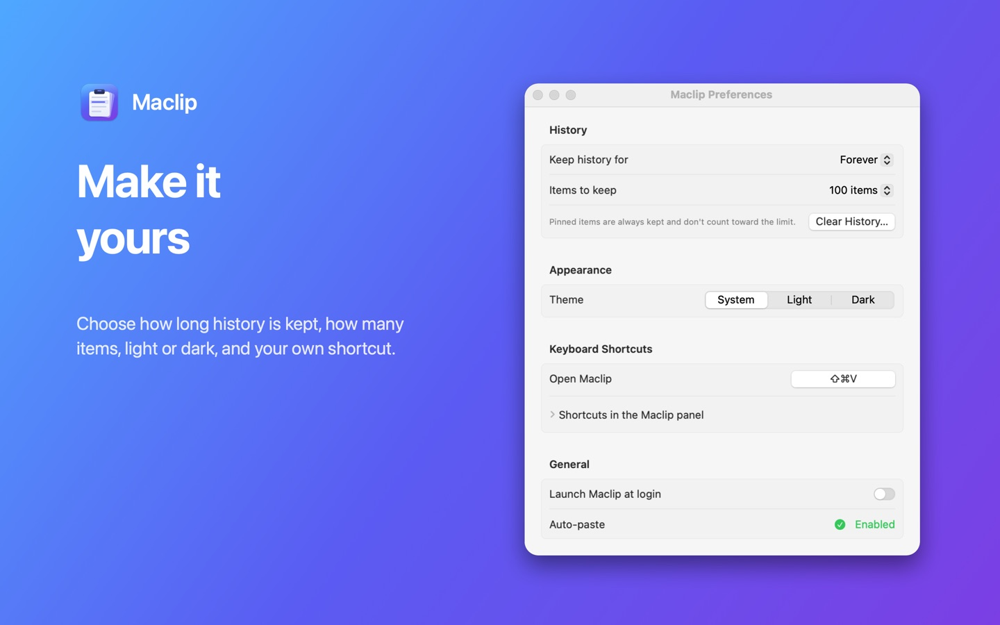
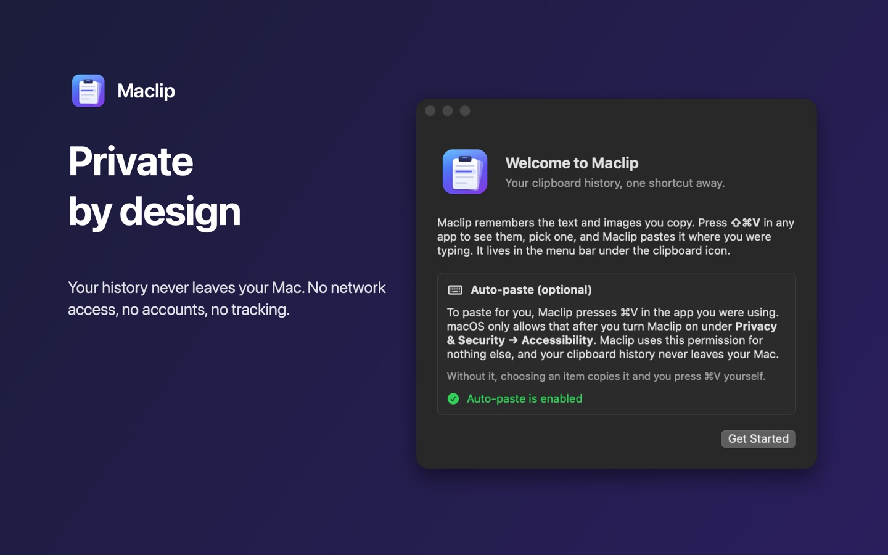

Maclip
Everything you copy, one shortcut away. Press ⇧⌘V in any app to search your clipboard history and paste it right where you're typing.
Free and open source · macOS 14 Sonoma or later

Features
Text and images
Every word, paragraph, link and screenshot you copy is saved, with image thumbnails.
Instant search
Start typing to filter your whole history. ⌘1–⌘9 pick the top items.
Pin favourites
Pinned snippets stay at the top and are never removed.
Pastes for you
Choose an item and Maclip pastes it into the app you were using.
Your rules
Keep history forever or for days, keep 25–1,000 items, pick light or dark, set your own shortcut.
Private by design
No network access, no accounts, no tracking. Your history never leaves your Mac.



Support
Getting started
After installing, Maclip appears as a clipboard icon in the menu bar. Copy something, then press ⇧⌘V. Use the arrow keys and Return, or click, to paste an item. Press Esc to close.
Auto-paste isn't working
Maclip needs permission to press ⌘V for you. Open System Settings → Privacy & Security → Accessibility and turn on Maclip. If it's already on but doesn't work, for example after an update, remove it with −, add it again with +, and reopen Maclip. Without the permission Maclip still copies the item; just press ⌘V yourself.
Nothing is being recorded
Recent macOS versions can block apps from reading the clipboard. If Maclip's menu shows "Clipboard reading restricted", allow Maclip under System Settings → Privacy & Security. Items that password managers mark as private are skipped on purpose.
My screenshots don't show up
⇧⌘4 saves screenshots as files. Add Control (⌃⇧⌘4) to copy the screenshot to the clipboard instead, and Maclip will keep it.
The shortcut conflicts with another app
Some apps use ⇧⌘V for "Paste and Match Style". Pick a different shortcut in Maclip's Preferences → Keyboard Shortcuts.
Contact
Found a bug or have an idea? Open an issue on GitHub.